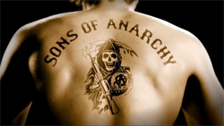

Sons of Anarchy est une série télévisée dramatique américaine créée par Kurt Sutter, qui a été diffusée pour la première fois en 2008 et a duré sept saisons jusqu'en 2014. La série se déroule dans la ville fictive de Charming, en Californie, et suit les membres d'un club de motards hors-la-loi appelé SAMCRO (Sons of Anarchy Motorcycle Club Redwood Original). La série explore les relations complexes entre les membres du club, ainsi que leurs relations avec les membres de leur communauté locale. Elle présente également des éléments de critique sociale, en explorant les effets néfastes de la criminalité et de la corruption sur la communauté locale. Le personnage principal de la série est Jackson "Jax" Teller, interprété par Charlie Hunnam, qui est le vice-président de SAMCRO et le fils du fondateur du club. Au fil des saisons, Jax doit faire face à de nombreux défis, notamment la concurrence d'autres clubs de motards, les autorités locales et fédérales, ainsi que des gangs rivaux. Les autres membres du club comprennent Clay Morrow (Ron Perlman), le président de SAMCRO et beau-père de Jax ; Bobby Munson (Mark Boone Junior), le secrétaire de SAMCRO ; Tig Trager (Kim Coates), le sergent d'armes de SAMCRO ; et Chibs Telford (Tommy Flanagan), un membre écossais de SAMCRO. La série présente également une distribution étendue comprenant des personnages secondaires récurrents et invités.
Clay Morrow est l'un des personnages principaux de la série Sons of Anarchy. Il est le président en exercice du club de motards SAMCRO et est joué par l'acteur Ron Perlman. Clay est un personnage complexe et controversé, souvent considéré comme impitoyable et prêt à tout pour protéger les intérêts de SAMCRO, même s'il doit commettre des actes violents et illégaux. Son personnage est également impliqué dans plusieurs intrigues, y compris des complots pour détourner le pouvoir et le contrôle du club.
Jax Teller est l'un des personnages principaux de la série télévisée Sons of Anarchy. Il est joué par l'acteur Charlie Hunnam. Jax est un membre du club de motards Sons of Anarchy Motorcycle Club Redwood Original (SAMCRO) et est le fils du fondateur du club, John Teller.
Au début de la série, Jax est présenté comme un jeune homme intelligent et talentueux qui a du mal à accepter la violence et les activités criminelles de SAMCRO. Il est également en conflit avec sa relation avec Tara, son amour d'enfance qui est devenue une médecin.
Alex "Tig" Trager est l'un des membres les plus fidèles et les plus violents du club de motards Sons of Anarchy Motorcycle Club Redwood Original (SAMCRO). Il est joué par l'acteur Kim Coates. Tig est connu pour être impulsif et parfois dangereux, mais il est également très loyaux envers le club et ses membres. Il est souvent impliqué dans des situations violentes et controversées, mais reste un personnage apprécié dans la série pour son humour et sa détermination à protéger SAMCRO.
Bobby Munson est l'un des membres fondateurs du club de motards Sons of Anarchy Motorcycle Club Redwood Original (SAMCRO). Il est joué par l'acteur Mark Boone Junior. Bobby est un personnage bien-aimé et respecté dans le club, connu pour son attitude calme et posée et son intelligence émotionnelle. Il est également le trésorier de SAMCRO et est chargé de la gestion des finances du club. Au fil de la série, Bobby est impliqué dans plusieurs intrigues et affrontements, mais reste fidèle à ses valeurs et à sa loyauté envers SAMCRO.
Juice Ortiz est l'un des membres les plus jeunes et les plus vulnérables du club de motards Sons of Anarchy Motorcycle Club Redwood Original (SAMCRO). Il est joué par l'acteur Theo Rossi. Juice est d'origine portoricaine et a du mal à s'intégrer au sein de SAMCRO en raison de son apparence et de sa culture différente. Au fil de la série, Juice est impliqué dans plusieurs intrigues et luttes de pouvoir, notamment lorsqu'il est contraint de faire face à des problèmes personnels qui menacent la sécurité du club. Malgré ses erreurs et ses faiblesses, Juice reste un personnage attachant et loyal envers SAMCRO et ses membres.
Filip "Chibs" Telford est l'un des membres les plus expérimentés et les plus respectés du club de motards Sons of Anarchy Motorcycle Club Redwood Original (SAMCRO). Il est joué par l'acteur Tommy Flanagan. Chibs est originaire d'Irlande et est un ancien membre de l'IRA. Il est souvent impliqué dans les missions les plus dangereuses de SAMCRO et est connu pour son sang-froid et son intelligence. Chibs est également le bras droit de Jax Teller et est l'un des membres les plus proches de la famille de Jax. Au fil de la série, Chibs est impliqué dans plusieurs intrigues et luttes de pouvoir, mais reste fidèle à SAMCRO et à son code d'honneur.
Happy Lowman est l'un des membres les plus violents et mystérieux du club de motards Sons of Anarchy Motorcycle Club Redwood Original (SAMCRO). Il est joué par l'acteur David Labrava. Happy est connu pour son apparence sombre et intimidante, ainsi que pour son amour des armes à feu et des activités violentes. Il est également un expert en torture et en interrogatoire. Bien qu'il soit souvent en retrait et peu bavard, Happy est un personnage respecté et craint dans le club, et est considéré comme un atout précieux lors des missions les plus dangereuses de SAMCRO.
Harry "Opie" Winston est l'un des membres les plus proches de Jax Teller et l'un des personnages les plus aimés de la série "Sons of Anarchy". Il est joué par l'acteur Ryan Hurst. Opie est un ancien détenu et un ami d'enfance de Jax. Il a du mal à se réintégrer dans la société après sa libération de prison, mais trouve un sens à sa vie en rejoignant SAMCRO. Opie est un membre loyal et respecté du club, mais il est également impliqué dans des événements tragiques qui changent sa vie à jamais. Au fil de la série, Opie doit faire face à de nombreux défis, notamment la perte de ses proches et la lutte pour maintenir l'intégrité de SAMCRO.
Otto Delaney est l'un des personnages récurrents de la série "Sons of Anarchy". Il est joué par l'acteur Kurt Sutter, qui est également le créateur de la série. Otto est un membre de longue date de SAMCRO et est emprisonné pour avoir commis des crimes violents. Au fil de la série, Otto devient un informateur pour le FBI et fournit des informations sur SAMCRO en échange de faveurs. Cependant, il est aussi victime de manipulations et de pressions psychologiques, ce qui le rend vulnérable. Otto est considéré comme un personnage complexe et tragique, qui a du mal à trouver sa place au sein du club et de la société.
Piermont "Piney" Winston est l'un des membres fondateurs de SAMCRO et le père d'Opie Winston. Il est joué par l'acteur William Lucking. Piney est un personnage important dans la série et est considéré comme une figure paternelle pour de nombreux membres de SAMCRO. Il est loyal au club et s'oppose souvent à Clay Morrow, qui a pris le contrôle du club. Piney est également impliqué dans les activités criminelles de SAMCRO, mais il est aussi un vétéran de la guerre du Vietnam et a une conscience plus morale que certains des autres membres du club. Au fil de la série, Piney est confronté à de nombreux défis, notamment la mort de sa femme et la maladie pulmonaire causée par son service militaire.
Lenny "The Pimp" Janowitz est un personnage mineur dans la série "Sons of Anarchy". Il est joué par l'acteur Sonny Barger, qui est également un ancien membre du club de motards Hell's Angels. Dans la série, Lenny est un ancien membre de SAMCRO et un ami proche de Clay Morrow. Il est souvent vu dans le club house et sert de conseiller pour les membres du club. Bien qu'il ne soit pas un personnage principal, Lenny est considéré comme un personnage important dans l'univers de SAMCRO et représente une partie de la culture des motards traditionnels.